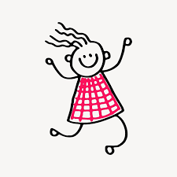

Mom and Dad
My Moms name is Timber McPhaul she is the joy in the family. A fun fact about her, She has to ahve a seet treat after dinner. My Dads name is Ace McPhaul. He enjoys spending time with his family through debates and card games. Something about my dad is he likes to watch a movie with the family every night before bed.
Blazen Trailz
Blazen is my brother closest to me in age, he is two years younger than me and is quite honestly my best friend. Hes very witty and loves to play board games. A fun fact about him is he just got a new horse to team rope.

Darlin Dawn
This is my one and only sister, Darlin Dawn. Shes 14 years old and such a sweet heart. She definitly has an oppininated side to her but really is the sweetes. A fun fact about her is that she wants to be a fashion designer when she gets older.